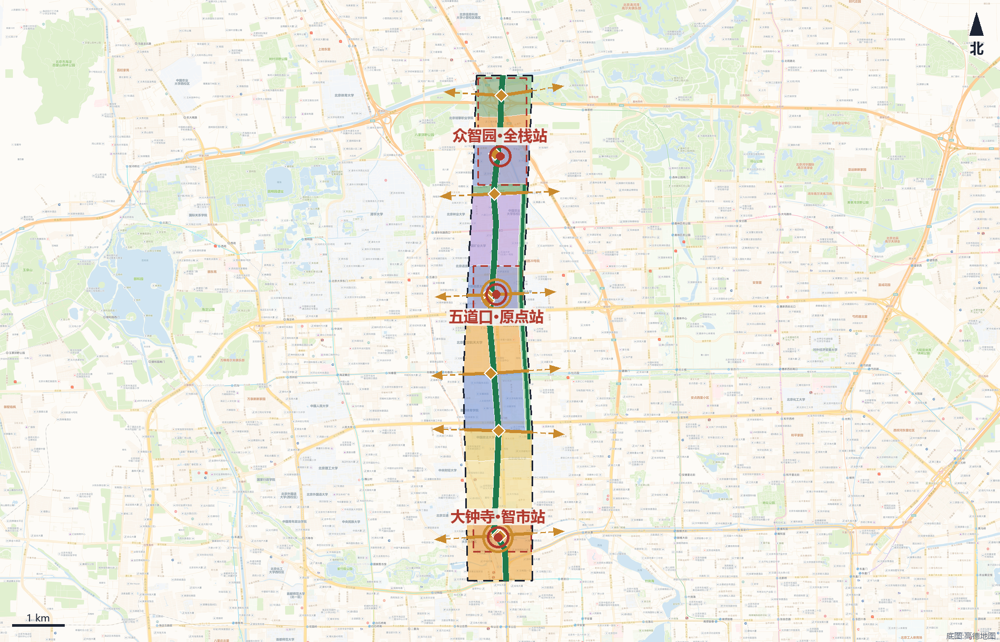
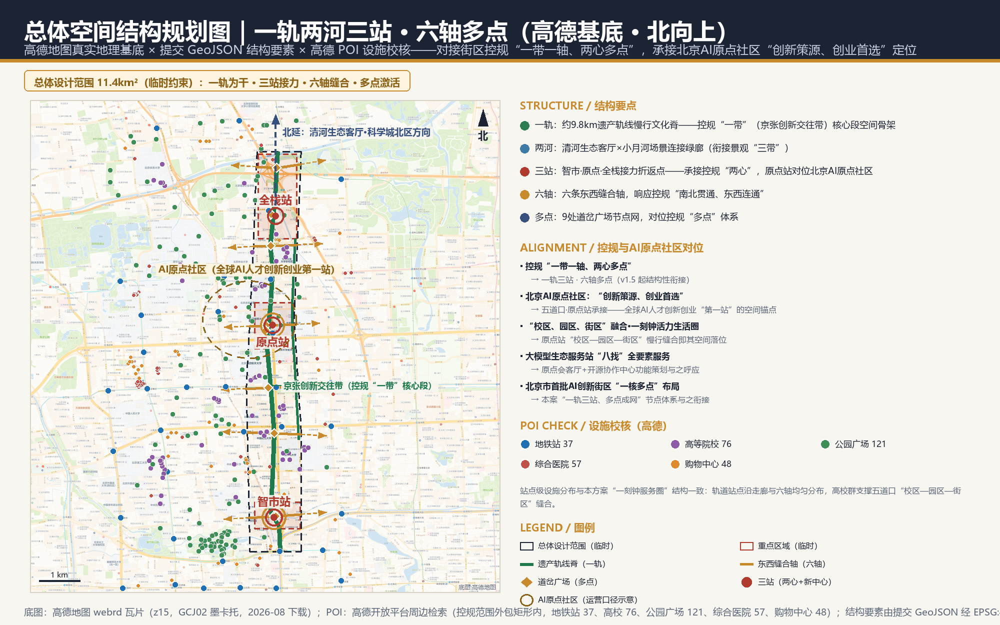
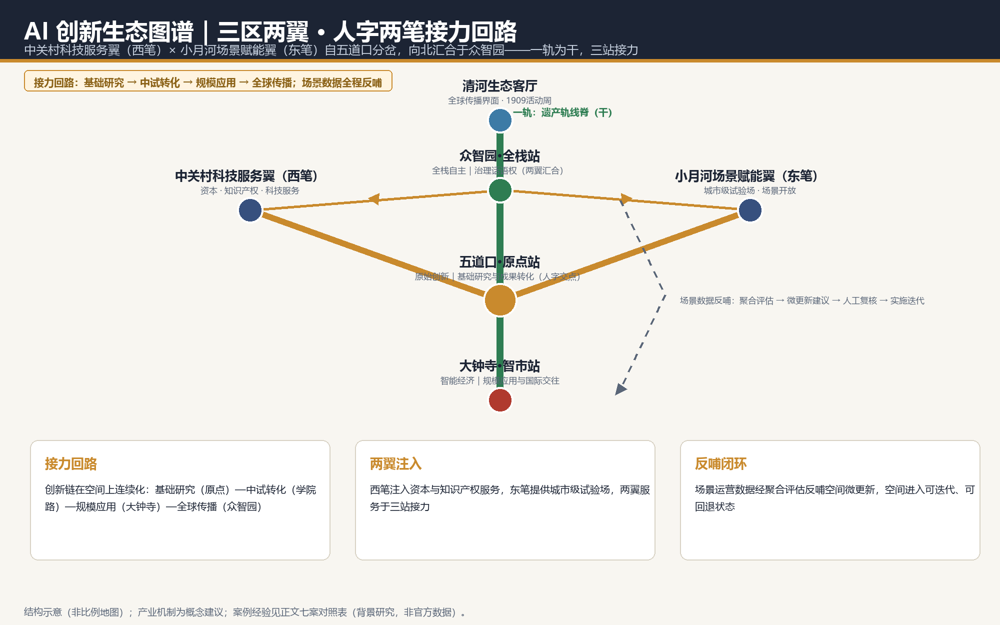
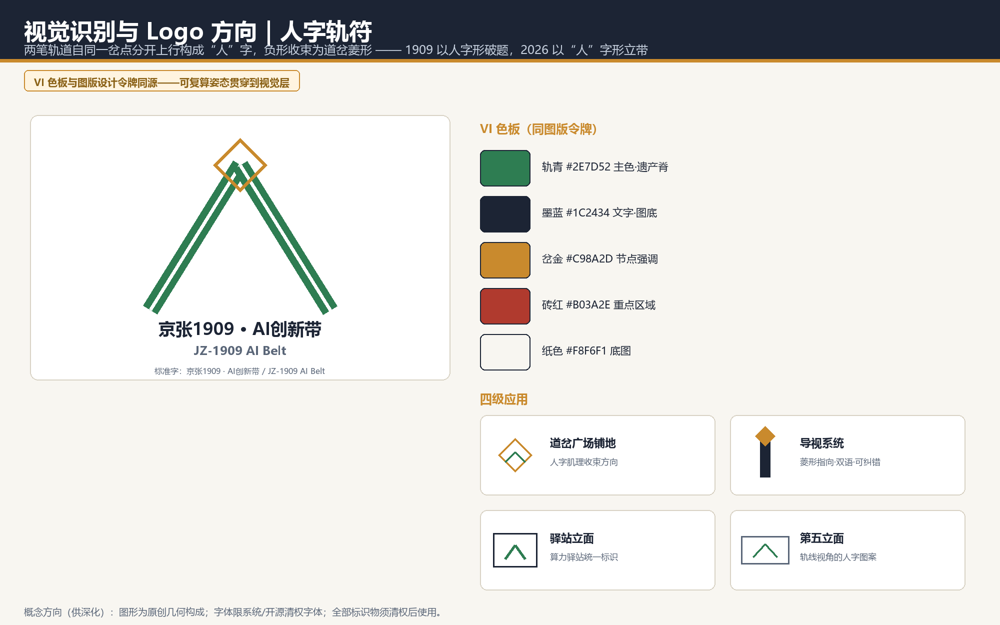

核心指标（EPSG:4548 复算）
总览地图 · 用地结构与要素落位（高德基底 · 北向上）

用地分区图例
商业服务业 05 255.6 ha居住 0701 132.4 ha社区服务 0702 65.8 ha科研 0802 306.5 ha教育 0804 113.4 ha公园绿地 1401 245.0 ha防护绿地 1402 17.8 ha广场 1403 4.7 ha
蓝绿公共空间与结构要素
既有京张铁路线位（遗产轨线脊）现状主干路重点区域（临时约束）站前广场与公共空间示范更新建筑基底蓝绿开敞空间遗产保护范围（现状）道岔广场（9 线穿廊 18 交点，一线一点取 9）六条东西缝合轴（越界虚线为城市侧示意）
用地代码采用场地包分类子集；重点区域与既有约束以低对比虚线表达临时/现状属性。
交通慢行主骨架约 25.5 公里（中心线总长，EPSG:4548 复算）；六条东西缝合轴落实控规“南北贯通、东西连通”，断点以人字形缓坡绿台无障碍缝合；遗产脊与 9 条横向线路 18 处穿廊交点按“一线一点”设 9 处道岔广场（概念点位）。
三层范围工作框架
战略与结构研究
概念性城市设计深度（方向级）
概念性城市设计深度（方向级）+ 实施路径建议
总体结构：一轨两河三站 · 六轴多点 · 三区两翼人字两笔
京张遗产轨线慢行文化脊：沿 1909 年线位设置约 9.8 公里、宽约 116 米遗产公园脊，慢行、文化展示与 AI 场景复合轴（控规“一带”核心段）。
清河生态客厅（北端约 83.4 公顷滨水界面）× 小月河场景连接绿廊（场地内接驳段，沿东边线内缩约 62 米，河道本体在场地外），衔接控规景观结构“三带”。
大钟寺·智市站、五道口·原点站、众智园·全栈站为接力折返点（智市、原点承接控规“两心”）；两翼（中关村科技服务翼为西笔、小月河场景赋能翼为东笔）自五道口分岔、向北汇合于众智园，构成“人”字两笔。
六条东西缝合轴（大钟寺/学院路/知春路/五道口/五环上跨/清河滨水）响应控规“南北贯通、东西连通”；遗产脊与 9 条横向线路 18 处穿廊交点按“一线一点”设 9 处道岔广场，对位控规“多点”体系。
人字三重立义：一撇 AI 赋能产业（产业向新）、一捺 AI 赋能空间（空间向活）、人字交点立在以人为本（城市向人）——撇捺写“人”，智赋产城。
指标复算与数据缺口
已知指标（可由提交 GeoJSON 复算）
| 指标 | 数值 | 口径 |
|---|---|---|
| 提交范围面积 | 1,141.3 公顷 | geometry/site_boundary.geojson 直接量算 |
| 蓝绿开敞空间面积 | 267.9 公顷 | green_space 图层合算 |
| 蓝绿开敞空间占比 | 23.5% | green_space / site |
| 公共空间面积 | 6.3 公顷 | public_space 图层合算 |
| 公共空间占比 | 0.6% | public_space / site |
| 示范建筑基底面积 | 13.0 公顷 | buildings 图层合算 |
| 示范建筑基底占比（设计值） | 1.1% | buildings / site，非法定密度 |
| 道路中心线总长 | 25,471 m | roads 图层合算 |
| 遗产轨线脊长度 | 9,800 m | constraints 既有铁路线位 |
| 一期面积 | 748.9 公顷 | phasing 图层 |
| 二期面积 | 167.6 公顷 | phasing 图层 |
| 三期面积 | 224.7 公顷 | phasing 图层 |
| 重点区域数量 | 3 | key_areas 图层计数 |
| 用地单元数量 | 63 | land_use 图层计数 |
法定管控指标（待正式数据补齐，如实标注）
容积率 · 待正式数据补齐建筑高度上限 · 待正式数据补齐法定建筑密度 · 待正式数据补齐法定绿地率管控 · 待正式数据补齐退线控制 · 待正式数据补齐
任务覆盖与专业矩阵
贡献者自检状态
| ✓ | BOUNDARY_TRUST | 使用临时约束边界，已在正文/图面/假设中标注；官方边界发布后需重算。 |
| ✓ | KEY_AREAS_TRUST | 三处重点区域为临时约束 polygon，已标注 provisional；不作为正式红线或精确面积依据。 |
| ✓ | LAND_USE_TOPOLOGY | 63 个用地单元由共享切割线平面切分生成，并集与提交边界重合、无重叠。 |
| ✓ | METRICS_REPRODUCIBLE | 全部 known 指标由提交几何在 EPSG:4548 下复算；法定管控指标如实标注 unknown。 |
| ✓ | VISUAL_STATIC | 可视化页为离线静态 HTML，无远程资源、脚本、字体或追踪。 |
| ✓ | BILINGUAL_CONTRACT | 中文主稿 + 英文全文对照，展示件与含文字图件均提供双语。 |
| ✓ | PROFESSIONAL_EVIDENCE | 正文含标准、深度、图层、指标与来源锚点；机器索引保存在结构化文件。 |
7 项检查全部通过；官方 self_check_submission.py 结果以提交时为准。
分期实施
更新项目清单（13 项）
| ID | 项目 | 类型 | 分期 | 前置条件 |
|---|---|---|---|---|
JZ1909-01 | 大钟寺四象限步行连通 | 交通/公共空间 | 近期 | 交通专项、道路红线 |
JZ1909-02 | 智市站前广场与接驳厅 | 公共空间/建筑 | 近期 | 轨道一体化方案 |
JZ1909-03 | 原点会客厅（记忆馆） | 文化/改造 | 近期 | 文保资料、产权确认 |
JZ1909-04 | 开源发布广场 | 公共空间 | 近期 | 运营主体确定 |
JZ1909-05 | 遗产轨线脊南段贯通 | 绿地/慢行 | 近期 | 用地权属、断点工程论证 |
JZ1909-06 | 校城慢行缝合线 | 慢行 | 中期 | 校区管理协同 |
JZ1909-07 | 小月河场景连接绿廊 | 蓝绿/场景 | 中期 | 河道蓝线与生态要求 |
JZ1909-08 | 全栈站研发核与实验楼（中期启动概念先行区，远期全面建成） | 产业/建筑 | 中—远期 | 控规条件、产业准入 |
JZ1909-09 | 清河滨水生态客厅 | 蓝绿 | 远期 | 防洪与生态专项 |
JZ1909-10 | 五环上跨观景联系 | 慢行/景观 | 远期 | 工程可行性论证 |
JZ1909-11 | 端侧算力驿站试点 | 新基建 | 中期 | 能源与安全评估 |
JZ1909-12 | 1909贡献墙与导视系统 | 文化/标识 | 近期 | 版权清权 |
JZ1909-13 | 人字道岔广场序列 | 公共空间/标识 | 近期 | 竖向与管线资料 |
场景—空间—运营矩阵（12 张场景卡，3 张为产业测试验证场景）
| 场景卡 | 空间载体 | 摘要 | 运营主体（建议） | 数据与资金来源 | 回退条件 |
|---|---|---|---|---|---|
| 01 AI慢行导航 | 遗产轨线脊全线 | 可解释导视与低侵入传感识别断点与拥挤节点，输出人工可复核建议 | 街区运营方+市政养护 | 市政公开数据+聚合传感数据 | 退回静态标识导视 |
| 02 企业服务Copilot | 三站服务驿站 | 政策检索、空间匹配与申报导航，结论附来源与置信度 | 园区服务运营主体 | 政务公开数据+企业授权数据；运营补贴 | 退回人工服务窗口 |
| 03 公共安全与活动运营复核 | 站前广场群 | 人流与活动风险只做聚合预警，处置决定由人工作出 | 属地管理机构+活动方 | 聚合人流数据（不落地个体） | 关闭预警，保留人工巡查 |
| 04 低速无人配送测试 | 原点社区内街 | 限定路线、限速、可回退的配送试点，数据分级开放 | 配送企业+社区管委会 | 企业自筹+路线测试数据分级 | 一键停运，恢复全人工配送 |
| 05 AI文化导览 | 1909记忆线路 | 多语导览讲述京张铁路与中关村创新史，史实经文献校核 | 文化运营机构 | 文献校核语料；文化项目资金 | 退回人工讲解与纸质导览 |
| 06 AI健康服务导航 | 社区服务节点 | 连接周边医疗与健康资源，不提供诊断结论；医疗等公共服务场所保留现场指导与人工办理通道，传统服务与智能服务并行按国办发〔2020〕45号政策背景把握（其阶段性目标已到期，仅作场景设计参照） | 社区卫生服务机构 | 医疗公开资源目录 | 保留全人工服务通道 |
| 07 安全治理沙盒（测试） | 众智园实验楼 | 标准制定、可信评测与模型红队测试的可参观协作节点 | 科研机构+标准组织 | 评测任务授权数据 | 沙盒关停不影响开放空间使用 |
| 08 端侧算力驿站（测试） | 三站公共服务点 | 分布式算力与低碳能源融合的新基建原型，供专业团队深化 | 新基建运营企业+政府引导 | 企业投资+算力服务收入 | 驿站改作公共服务亭 |
| 09 开源发布厅 | 原点站广场 | 成果发布、代码贡献展示与小型路演 | 开发者社区+场地运营方 | 社区自筹+活动赞助 | 退回常规公共活动场地 |
| 10 低碳运行监测（测试） | 清河滨水客厅 | 雨洪、能耗与碳排监测展示，指标口径公开 | 市政/环保运营主体 | 市政传感网数据 | 口径公开，可整体下线 |
| 11 数据要素会客厅 | 大钟寺片区 | 以合规、授权、可审计为前提的数据流通城市界面 | 数据交易服务机构 | 授权数据产品 | 关闭线上入口，保留实体服务 |
| 12 1909全球活动周路线 | 一带公共空间 | 开发者节、场景开放日与朝圣路线的年度运营组合 | 主办方+属地政府 | 活动赞助+票务 | 规模缩减为社区级活动 |
演示图版（双语）





八张核心图均由同一 GeoJSON 与指标派生（总体空间结构规划图另叠高德瓦片底图与 POI 校核点）；英文对照版同名 .en.png。
来源与假设
来源登记（正式依据 / 登记层 / 临时与背景分层）
- SITE-PACKAGE — 任务书、枚举、设计空间、限值、模式与临时边界等场地包材料。
- SOURCE-REGISTRY — 区分 formal 可用、背景、临时与待审资料的登记层。
- PROCESSED-FACT-PACK — 范围、任务、资料用途与缺资料清单的导航层，非新权威来源。
- BOUNDARY-SOURCE — 提交总体设计范围（临时约束），仅用于生成、展示与临时自检。
- KEY-AREA-SOURCE — 三处重点区域范围（临时约束），仅用于生成、展示与临时自检。
- OFFICIAL-ANNOUNCEMENT — 公告 1.3/1.4/1.5 的任务、范围、面积、语言与成果语境主控依据。
- AGENT-TASKBOOK — 十条共创原则、六项智能体任务、场景/品牌/运营要求与边界条款。
- GLOBAL-CASE-BACKGROUND — 全球创新生态案例为背景研究（匹兹堡、伦敦国王十字、Kista、Kendall Square、深圳南山、杭州城西、慕尼黑 Werksviertel），仅作经验参照，不作为正式证据。 常识级背景，未逐案核验最新数据；不得作为投资额、产值或政策结论依据。
- KG-DRAFT-2024 — 《北京海淀区京张铁路遗址公园沿线（人工智能创新街区重点地区）HD00-1601等街区控制性详细规划（街区层面）（2022-2035年）（草案）》公示图则（北京市规划和自然资源委员会海淀分局，2024-12-20 公示）：空间结构“一带一轴、两心多点”、三大目标定位、规模控制（常住约36.4万人、城乡建设用地约1648.1公顷、建筑规模约2369.3万平方米）、九类主导功能分区、配套设施（公共服务298处等）、整体景观结构“三带六轴、多廊多中心”、交通体系（道路网密度约8.0公里/平方公里、绿色出行80%）等结构性衔接依据。 公示图则为图示层级材料，非精确红线与管控图则全文；仅作空间结构与指标口径衔接，不作法定管控数值依据。
- KG-APPROVAL-2026 — 北京日报报道（2026-08-12）：市规划自然资源委于 2026-08-11 批复《北京海淀区京张铁路遗址公园沿线（人工智能创新街区重点地区）HD00—1601等街区控制性详细规划（街区层面）（2024年—2035年）》；范围东至新街口外大街、西至中关村大街、北至成府路、南至西直门外大街，共 9 个街区约 1668.2 公顷；以绿色公共空间建设引领区域城市更新，发展大模型、智能体、具身智能等新业态，构建生活圈与创新圈融合的一刻钟社区服务圈。 新闻报道层级；获批控规成果全文（含精确图则）尚未公开取得，结构性引用，待正式成果公开后复核。
- HD-YUANDIAN-2026 — 北京市海淀区人民政府官网《北京AI原点社区，全球AI人才创新创业的“第一站”》：北京AI原点社区约 3 平方公里（以东升大厦为中心），立足“创新策源、创业首选”特色定位，目标打造“全球AI人才创新创业第一站”；东升产业空间集聚 AI 领域企业 300 多家、占比超七成（2025 年 AI 相关专利商标超 2000 项）；1 公里半径内聚集 30 多所高校和科研机构、超 1000 位 AI 科学家、1.3 万名开发者、10 万名相关专业学子；原点学堂（免费工位、全生命周期创业服务）、大模型生态服务站（“找政策、找资金、找算力、找人才、找伙伴、找智力、找空间、找场景”八大核心问题一站式解决）、“15分钟活力生活圈”（4000 余套人才公寓、海淀未来学校等）；社区已纳入北京市首批人工智能创新街区，北京市打造以海淀为核心的“一核多点”布局。本案五道口·原点站空间承接与功能策划呼应依据。 政府官网新闻层级材料；社区范围为运营口径、非规划红线，企业/人才数据为报道时点值，仅作结构对位与功能策划呼应，不作法定依据。
- AMAP-POI-2026 — 高德开放平台周边检索 API（2026-08 检索，检索范围 lng 116.300–116.380 / lat 39.925–40.035（控规范围+北段至清河），双中心检索，GCJ02→WGS84 转换）：地铁站 37、高等院校 76、公园广场 121、综合医院 57、购物中心 48，用于全部地图图版（spatial-structure / overview-map / land-use-structure / mobility-bluegreen / key-areas）的设施分布校核叠加与详细设计对位标注；底图为高德地图 webrd 瓦片（z15）。 商业地图 POI 存在时效与收录偏差，仅作现状设施分布校核与图面叠加，不进入指标复算口径。
关键假设与触发条件
- A-BOUNDARY-001 provisional_in_use 总体设计范围与三处重点区域目前采用维护者登记的临时粗略 polygon（provisional_constraint, official_boundary=false）。
方案可用于评审讨论与临时自检；官方边界发布后，用地/建筑/道路/绿地/公共空间/分期图层与全部面积指标需整体重算。 - A-CONTROLS-001 pending_professional_confirmation 控规容积率、建筑高度、建筑密度、绿地率管控、退线与道路红线等法定条件无公开正式文件。
全部法定管控指标在 metrics.json 中标注 unknown，正文以概念建议表达，不作数值伪装。 - A-EXISTING-001 pending_official_survey 现状建筑底数、权属、结构安全、市政管线与文保控制线缺失。
拆改留仅区分新建/改造/保留示范对象，不指定拆除对象；constraints.geojson 中现状要素为示意性推断（confidence=low）。 - A-TRAFFIC-001 pending_specialist_study 轨道一体化、道路断面、桥隧与慢行断点工程可行性需交通专项研究。
交通类空间建议均为概念方案，不构成工程结论。 - A-TRAFFIC-002 pending_professional_confirmation 现状交通框架（13/12/15 号线站点与换乘、京藏高速、北四环、学院路、成府路）为公开资料推断；constraints 图层中 12/15 号线与北四环为示意线位（confidence=low），京藏高速位于场地东侧外缘、不落入图层仅文字标注。
现状框架仅作思考底座；站前广场落位与规模分级需随正式交通与道路红线资料复核。 - A-RIVER-001 pending_specialist_study 小月河河道本体位于场地之外（学院路/西土城路一线）；GREEN-002 绿廊为场地内接驳段（沿东边线内缩约 62 米生成），不临水。
定名“小月河场景连接绿廊”以正名实；跨路衔接河道段待专项，不作为滨水空间表达。 - A-MUNICIPAL-001 pending_specialist_study 能源负荷、市政容量、防洪与生态专项条件缺失。
新型基础设施仅为原型方向，列为正式深化前置条件。 - A-CONTROLS-002 partially_aligned_pending_full_text 京张铁路遗址公园沿线街区控规草案已于 2024-12-20 公示图则、并于 2026-08-11 获批复（2024—2035 年版）；公示图则与获批报道给出空间结构“一带一轴、两心多点”与全域规模口径，但获批成果的精确管控图则与红线全文尚未公开取得。
本案 v1.5 起按公示图则做空间结构与产业方向衔接（六轴缝合、两心对应、绿带引领更新）；容积率等法定管控指标仍标注 unknown，待正式控规成果公开后逐项复核。 - A-OPERATION-001 concept_only 活动体系、社区运营、场景开放与转化路径均为运营概念建议。
不构成已确定的政府活动、招商、资金或政策安排。